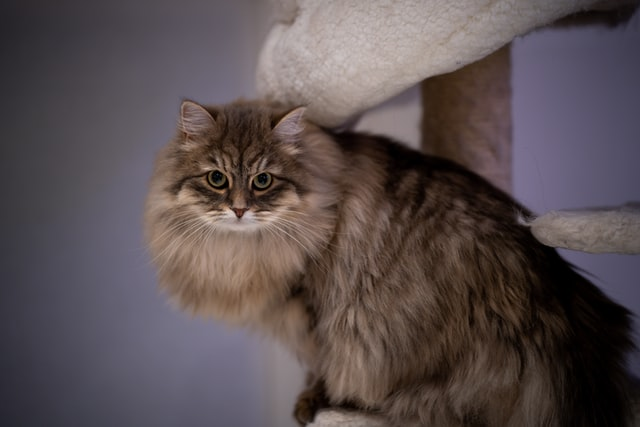
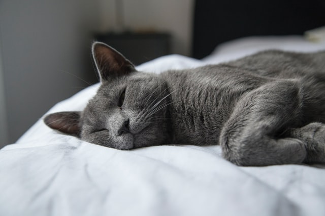
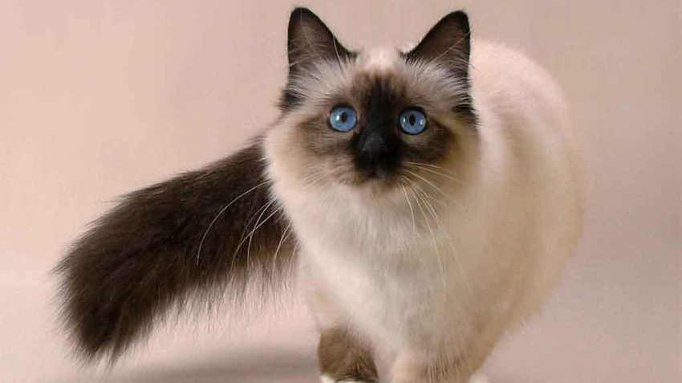
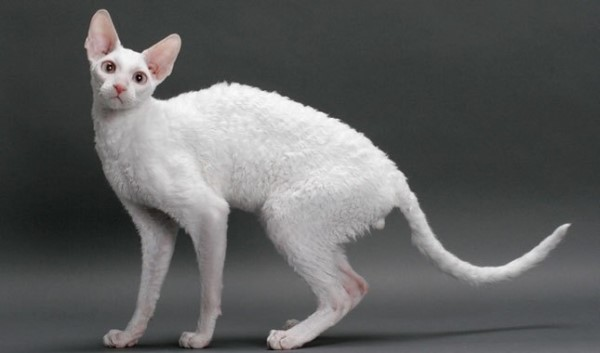

Ideal Breeds for Allergy Sufferers
As I have mentioned previously, there is no such thing as an "allergen-free" cat. However, below is a list of cat breeds that produce less of the Fel D 1 protein and some fun facts about each of them!.

Siberian Forest Cats hail from the cold, subartic Taiga of Siberia in Russia. They have long, thick coats that are perfect for keeping them warm in harsh winters. These cats have been native to Russia for some 1,000 years, and were brought to the united states in 1990. Siberians tend to be super affectionate, and will follow you wherever you go. They also require lots of playtime and plenty of activity.
Anyone with allergies considering adopting a Siberian may want to check with a breeder to see how they react around the parents. While these cats (especially females) don't produce as much Fel D 1, there is plenty of fur to go around that might irritate senstive owners.
Fun Fact:The Siberian's molting is not triggered by temperature, but a change in daylight hours.
Russian Blues are a naturally ocurring breed, so we don't know for sure where these beautiful cats originally came from. It is speculated that their origin stems from northwest Russia. There is a theory that Russian Blues are descendents of the pets owned by Russian czars. Russian Blues are curious but calm breeds. They usually connect with only one person, and are loyal to their person forever. While a bit shy, they are loving and playful furry friends once comfortable.
The Russian Blue's coat is thick and velvety, but they shed very little. It is said that you can trace patterns in their fur that remain until smoothing over.
Fun Fact: According to folklore, Russian Blues were kept in the chambers of newborns to chase away evil spirits.

The Balinese has only been around for 81 years, introduced in America in 1940. After long-haired kittens appeard in a litter of Siamese cats, breeders wished to nurture them into their own variety. The Balinese is a bundle of personality. They are known for their intelligence, high activity level, and social tendencies.
Their coats are medium-length and silky. They shed periodically, but have no undercoat which means they are not prone to matting and tangles.
Fun Fact: Balinese are known for jumping on their person's shoulders and perching.

The earliest record of a Cornish Rex is from Cornwall, England in 1950, where a barn cat had a litter with one kitten having a distinct mutation: a curly coat. Much like the Balinese, these cats are full of energy. They are intelligent, love to play and have all of the attention on them. They also love to get into anything and everything.
With their coats being short with tight waves, less grooming is better. Even gentle brushing may damage their delicate coats.
Fun Fact: The term "Rex" for a curly-coated animal originated when King Albert I of Belgium entered some curly-haired rabbits in a rabbit show. They didn’t meet the breed standard, but the judges didn’t want to offend the king, so they accepted the curly-coated bunnies and wrote "Rex" next to their names.